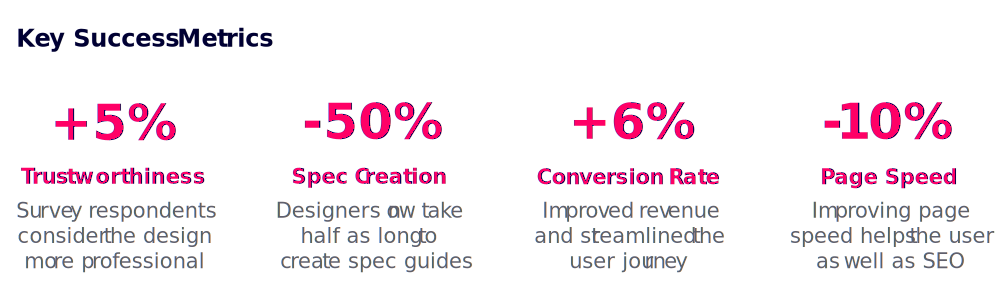

Design System for Capterra
I created and tested a design system for Capterra. The system includes themeable design tokens, fully responsive components, and animated interactions.
TLDR: Created and deployed a design system for Capterra with 40+ fully responsive, accessible, and user-friendly components.
- Role: Project Lead & Lead UI Designer
- Software Used: Figma, Illustrator, UserTesting, Hotjar, Optimize
- +6% CVR on Capterra's main directory page
- +5% in perceived "trustworthiness"
- 10% improvement in page speed (first contentful paint)
The Problem
Capterra's UI had no source of truth: the website was frankensteined together over many years by many different stakeholders. This created an inconsistent user experience and an inefficient development process.

During the 20 years since Capterra’s founding, countless changes have been made to the buyer facing product. From new features, to bug fixes, to rebrands, the website has passed through dozens of different aesthetic styles and voices. Capterra relied on style guides and institutional knowledge to guide design decisions.
However, this has created a number of problems:
1
Inconsistent aesthetics and functionality of identical UI elements.
2
Inefficient spec guide creation and handoff (upwards of 5 days between design approval and development).
3
Design debt spread across multiple pages making it difficult to prioritize (roughly 150 backlogged stories).
4
Inability to make feature releases as quickly as competitors (avg 4-5 features fewer than competitors).
5
A lack of unified design principles and guidelines.
The Process
Utilizing a cross-functional team of UI designers, UX designers, frontend developers, and product managers, I followed design thinking principles to research, design, test, redesign, and optimize the system components.
AuditFind and document every component and style live on the website. Note any relevant patterns that emerge.
IdeationHow can we improve these patterns? Where do these components fall short? What best practices are we ignoring?
DesignResearch UX interactions for each component. Create a preliminary system of the most common components.
TestingGather qualitative (moderated testing) and quantitative (A/B testing) data on component performance.
RefinementSynthesise test results and apply key learnings to system components and tokens. Retest new designs.
DevelopmentCreate a code repository of responsive, interactive, and optimized components with utility classes and React.
GovernanceDocument component use cases, best practices, testing results, and how to add, remove, or adjust components.
DeploymentRoll out the system to the live site starting with design tokens, and then by updating each page template.
Evangelizing & Education
Creating a design system requires an enormous amount of resources; securing buy-in from leadership became a major challenge of this project. Timely communication and clear KPIs were key to success.
After my initial research into design systems, I created a list of stakeholders and gathered expectations. Product, Tech, Branding, SEO, Marketing, and Content became stakeholders with whom we partnered throughout this project.
While leadership liked the idea of a design system, they were hesitant to dedicate the development resources necessary to make it happen. I found the most persuasive arguments were grounded in the clear, measurable benefits.
Proved that the new designs would improve conversion rates and revenue.
Partnered with Tech to ensure the system would reduce page speed.
Demoed the laborious design/dev handoff experience versus the new and improved process.
Presented hypothetical redesigns of major templates that incorporated long desired features.
Prototyping & User Testing
It was vital that none of the changes we introduced would negatively impact revenue for Capterra. We tested the new designs with unmoderated usability testing, moderated user testing, and live traffic AB testing.
For each of the major components we built, we started by researching best practices, building prototypes, and testing them with real users to make sure they would find our site usable and delightful. Our minimum success metric for this project was that no changes could negatively impact any UX data point (conversion rate, bounce rate, etc).
We presented the redesigned UI elements to live traffic in AB tests to verify that conversion rates weren't affected. In other cases, we presented a variety of designs to testers through unmoderated testing platforms to identify the most usable version of each component.
This process helped not only to convince leadership of the potential revenue gains from this project, but also to consistently remind the design team to create components that are best for the user, and not just aesthetically pleasing.
The Solution
A centralized, themeable, responsive, and accessible design system owned and maintained by a cross-functional tiger team. Deliverables include: pattern library, component library, token library, and documentation.
1
Pattern Library
A pattern library is a collection of user interface design elements. This includes design tokens like color, typography, spacing units, drop shadows, and other “elemental” aspects of UI design.
It also includes design components, what they look like, and how they behave. A pattern library is the design side of the component library.
2
Token Library
Design tokens are the fundamental building blocks of the system and create the Style Guide.
Tokens encompass: colors, typography, drop shadows, border radiuses, border widths, spacing units, and more. Design tokens are translated into CSS utility classes and are applied to components.
3
Component Library
A component library is the code repository that houses the system's design tokens and components.
This repository takes care of all the front end styling and interactivity that makes a component look and act like a component, and then packages each component for use in other repositories.
4
Documentation
System governance is a blueprint to designers, developers, and product managers on how to properly use and adjust the system.
Keyword glossaries, tips and tricks for operating Figma, important links, best practice, and step-by-step instructions on adding components and tokens are detailed in the governance documentation.
Core Tenets & Design Philosophy
To ensure that designers are creating components, tokens, and templates that look and feel like parts of one whole, I created a set of design principles that guided our design decisions.
Core Tenants
ModularComponents should always be designed with modularity in mind. This means that no component should be so specific that it is only used in one, or two contexts. This also means that no component can form layout on its own.
AccessibleEvery aspect of the system must be accessible to all users. Specifically, each component must pass AA color contrast criterion, be keyboard navigable, and be screen reader compatible.
ComprehensiveThis system should be thoroughly documented so that designers can quickly and consistently use components correctly. Every component has a comprehensive explanation of governance, use cases, interaction states, and more.
FlexibleBecause we design components to be modular, they need to be sufficiently flexible to suit a multitude of use cases. Creating components and design tokens with variants is one way to keep the system organized, and modular.
Design Philosophy
VibrantWe developed a palette of bright, fresh, pops colors to focus user attention on content and tools. These vibrant colors establish visual interest without overwhelming the layout with unnecessary, or distracting imagery.
ApproachableThere is an emphasis on organic shapes throughout Nimbus; rounded components like buttons and iconography create an inviting, friendly aesthetic. We focus on accessibility so that all software buyers feel welcome.
DimensionalNimbus is optimized to encourage user interaction through mimicking real world experiences. Through the use of drop shadows, added background contrast, and interaction effects, we help users easily perform complicated digital tasks.
AuthoritativeOur bold and angular typography portrays a sense of confidence. With clearly defined hierarchy and easy to read font styles, we establish Capterra as a dependable and professional source of information.
Key Learnings & Next Steps
The initial rollout has been met with positive user feedback and encouraging UX metrics. Next steps include optimizing individual components and building out new features with the system.

This project has been one of the most difficult, engaging, and fulfilling experiences of my career. Managing the design of 40+ components, and a scrum team of 6 developers required coordination and, above all, transparent communication.
Next steps include:
1
Introduce design system to relevant stakeholder teams like email marketing, international, brand, etc
2
A more thorough accessibility QA and optimization of keyboard navigation and screen reading compatibility
3
Investigate and implement theming to reflect sister sites’ branding
4
Partner with UX and CRO to begin testing optimizations of components
Next Case Study 
Mobile Comparison Table
Previous Case Study
Accounts System & Sharing
Developed with Love by Amelia Peacock 2020